Scott Doyle / scottdoy@buffalo.edu
PCA is a method of projecting data by calculating a set of vectors that captures the variance or “spread” of the data.
Recall that eigenvectors and eigenvalues can represent the direction and magnitude (respectively) of something represented in a matrix.
If our matrix is the covariance matrix $\boldsymbol{\Sigma}$, then the eigenvectors represent the direction of the data “spread”, while the eigenvalues are the magnitude of that spread.
Thus we can express the data as a lower-dimensional projection by choosing a set of eigenvectors corresponding to the largest eigenvalues.
The covariance matrix $\boldsymbol{\Sigma}$ is always positive and symmetric, having dimension $d\times d$ where $d$ is the number of dimensions.
We can prove that because of this, it has $d$ distinct, positive eigenvalues, each of which corresponds to an orthonormal eigenvector.
PCA tries to represent data by an optimized projection of the data using the covariance of the samples.
ICA seeks out independent generating components of the data.
Suppose you have $d$ independent, noiseless source signals $x_{i}(t)$ for $i=1,\,d$, where $t$ is our time component $1\leq t\leq T$.
We denote by $\mathbf{x}(t)$ the $d$ values of the mixed signal at time $t$, and assume that the mean of $\mathbf{x}$ over time is zero.
The multivariate density function is then written as:
$ p\left[\mathbf{x}(t)\right]=\prod_{i=1}^{d}p\left[x_{i}(t)\right] $
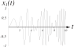
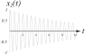
Example of two source signals, $x_{1}(t)$ and $x_{2}(t)$.
The source signals are detected by a $k$-dimensional sensor:
$ \mathbf{s}(t)=\mathbf{A}\mathbf{x}(t) $
where $\mathbf{A}$ is a $k\times d$ matrix representing the individual modulation of the $d$ source signals with respect to the $k$ detectors.
Example: If $\mathbf{x}$ is a set of sound waves produced by $d$ instruments, and $\mathbf{s}$ is an array of $k$ microphones that are recording the sound, then $\mathbf{A}$ might represent the distance between each specific microphone and instrument.
Goal: Extract the $d$ components in $\mathbf{s}$ that are independent.
Note that we’re ignoring the effects of noise, time delay, and possible dependence of one signal on another.
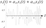
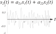
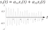
The source signals are sensed by an array of $k$ detectors, each of which receives a different mixture of $x_{1}(t)$ and $x_{2}(t)$.
The distribution in the output signals is related to the distribution:
$ p_\mathbf{y}=\frac{p_{\mathbf{s}}(\mathbf{s})}{|\mathbf{J}|} $
where $\mathbf{J}$ is the Jacobian matrix:
$ \mathbf{J}=\left( \begin{matrix} \frac{\partial y_{1}}{\partial s_{1}} & \cdots & \frac{\partial y_{d}}{\partial s_{1}} \\ \vdots & \ddots & \vdots \\ \frac{\partial y_{1}}{\partial s_{d}} & \cdots & \frac{\partial y_{d}}{\partial s_{d}} \end{matrix}\right) $
and
$ |\mathbf{J}|=\left| |\mathbf{W}|\prod_{i=1}^{d}\frac{\partial y_{i}}{\partial s_{i}}\right| $
The final stage is modeled as a linear transform of the source signals, plus a static nonlinearity:
$ \mathbf{y}=f[\mathbf{Ws}+\mathbf{w}_{0}] $
where $\mathbf{w}_{0}$ is a bias vector and $f[\cdot]$ is some kind of function (e.g. a sigmoid).
The goal in ICA is to find $\mathbf{W}$ and $\mathbf{w}_{0}$ so as to make the outputs $y_{i}$ as independent from one another as possible.
This is motivated by the fact that we know (i.e. we assume) the original signals themselves were independent.
So to find our matrix, we can calculate $\mathbf{W}$ and $\mathbf{w}_{0}$ iteratively, by defining a cost function, finding the derivative, and setting that to zero.
The goal is to find the set of components which are maximally independent, so our “cost” function should be a measure of independence for signals that we can try to maximize.
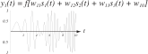
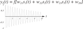
The reconstructed source signals are found by transforming the detected signals by a set of learned weights $\mathbf{W}$.
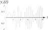
The reconstructed source signals are found by transforming the detected signals by a set of learned weights $\mathbf{W}$.
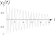
The reconstructed source signals are found by transforming the detected signals by a set of learned weights $\mathbf{W}$.
We use joint entropy to measure independence:
\begin{align} H(\mathbf{y}) &= -\mathcal{E}[\ln{p_{\mathbf{y}}(\mathbf{y})}] \\ &=\mathcal{E}[\ln{|\mathbf{J}|}]-\underbrace{\mathcal{E}[\ln{p_{\mathbf{s}}(\mathbf{s})}]}_{\textrm{independent of weights}} \ \end{align}
$\mathcal{E}$ is the expected value across all $t=1,\ldots,T$.
Through gradient descent we find the learning rule for $\mathbf{W}$:
$ \Delta\mathbf{W}\propto\frac{\partial H(\mathbf{y})}{\partial\mathbf{W}}=\frac{\partial}{\partial\mathbf{W}}\ln{|\mathbf{J}|}=\frac{\partial}{\partial\mathbf{W}}\ln{|\mathbf{W}|}+\frac{\partial}{\partial\mathbf{W}}\ln{\prod_{i=1}^{d}\left|\frac{\partial y_{i}}{\partial s_{i}}\right|} $
In component form we can write the first term as:
$ \frac{\partial}{\partial W_{ij}}\ln{|\mathbf{W}|}=\frac{\textrm{cof}[W_{ij}]}{|\mathbf{W}|} $
where $\textrm{cof}[W_{ij}]$ is the cofactor of $W_{ij}$, or $(-1)^{i+j}$ times the determinant of the $(d-1)-by-(k-1)$-dimensional matrix gotten by deleting the $i$th row and $j$th column of $\mathbf{W}$.
This gives us:
$ \frac{\partial}{\partial \mathbf{W}}\ln{|\mathbf{W}|}=[\mathbf{W}^{T}]^{-1} $
Which, in turn, gives the weight update rule for $\mathbf{W}$:
$ \Delta\mathbf{W}\propto[\mathbf{W}^{T}]^{-1}+(\mathbf{1}-2\mathbf{y})\mathbf{s}^{T}_{g} $
It can be shown that with the same sets of assumptions, the learning rule for the bias weights is:
$ \Delta\mathbf{w}_{0}\propto\mathbf{1}-2\mathbf{y} $
It’s difficult to know how many components we should try to reconstruct; if the number is too high, ICA may be sensitive to numerical simulation and may be unreliable.
This is a potentially useful alternative to PCA, if we suspect that our classes are elongated in parallel.
Using “similarity” instead of “distance” loses some intuitive interpretation about our data’s structure.
When this data is in very high dimensions, it’s impossible for us to visualize, even if the mathematics works perfectly.
We’d like to figure out a way to represent data in a low number (1-3) of dimensions while preserving the similarity between points.
First: Why do we NEED to see things in low dimensions?
Will a classifier work the same on the low-dimensional representation as it does on the high-dimensional one?
Are these methods only to help us humans visualize the data?
No! We are always constrained by the curse of dimensionality.
We’ve discussed it before, but now let’s examine it in detail.
The curse of dimensionality seems paradoxical at first: if features are statistically independent, and the class means are different, shouldn’t we always do better?
Consider the two class case where $p(\mathbf{x}|\omega_{j})\sim N(\boldsymbol{\mu}_{j},\boldsymbol{\Sigma})$ for $j=1,2$.
Assuming equal priors (just to make it simple), the Bayes error rate is:
$ P(e)=\frac{1}{\sqrt{2}}\int_{r/2}^{\infty}e^{-\frac{r^{2}}{2}}du $
where $r^2$ is the Mahalanobis distance between the class means:
$ r^{2}=(\boldsymbol{\mu}_{1}-\boldsymbol{\mu}_{2})^{T}\boldsymbol{\Sigma}^{-1}(\boldsymbol{\mu}_{1}-\boldsymbol{\mu}_{2}) $
$ P(e)=\frac{1}{\sqrt{2}}\int_{\frac{r}{2}}^{\infty}e^{-\frac{r^{2}}{2}}du $
How does our probability of error change as the distance between the class means $r$ increases?
Assuming conditional indpenedence, $\boldsymbol{\Sigma}=diag(\sigma_{1}^{2},\ldots,\sigma_{d}^{2})$ and:
$ r^{2}=\sum_{i=1}^{d}\left(\frac{\mu_{i1}-\mu_{i2}}{\sigma_{i}}\right)^{2} $
How does this change as $d$ gets larger?
We are adding more components, and thus (potentially) increasing $r$.
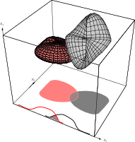
In the one-dimensional space, there is some significant overlap (i.e. Bayes error) between the features.
When we add dimensions, we see a reduction in this overlap; in the third dimensions, the class spaces are completely separate, and the Bayes error is zero.
In theory, the worst feature will have identical class means, so that $\mu_{i1}-\mu_{i2}=0$, so $r$ will not increase at that point in the sum.
If $r$ is increased without limit, then our error should theoretically approach zero! (Which obviously doesn’t happen.)
So what’s wrong? The reason not all classifiers are perfect comes down to one of these:
Dimensionality reduction methods seek to address these issues by projecting the data into a low-dimensional space, combining dependent variables and ignoring non-informative ones.
Let $\mathbf{y}_{i}$ be a projection of a sample $\mathbf{x}_{i}$.
$\delta_{ij}$ (delta) is the distance between $\mathbf{x}_{i}$ and $\mathbf{x}_{j}$, and $d_{ij}$ (lowercase “d”)is the distance between $\mathbf{y}_{i}$ and $\mathbf{y}_{j}$.
Thus we want to find how to arrange $\mathbf{y}_{1},\ldots,\mathbf{y}_{n}$ such that the distances $d_{ij}$ are as close as possible to $\delta_{ij}$.
We can set up a few criterion functions:
| Equation | Characteristic |
| $J_{ee}=\frac{\sum_{i<j}(d_{ij}-\delta_{ij})^{2}}{\sum_{i<j}\delta_{ij}^{2}}$ | Emphasizes large error, regardless of original distance |
| $J_{ff}=\sum_{i<j}\left(\frac{d_{ij}-\delta_{ij}}{\delta_{ij}}\right)^{2}$ | Emphasizes proportional error, regardless of actual error |
| $J_{ef}=\frac{1}{\sum_{i<j}\delta_{ij}}\sum_{i<j}\frac{(d_{ij}-\delta_{ij})^{2}}{\delta_{ij}}$ | Compromise between the two |
All are invariant to rigid transforms and are normalized.
Gradients are easy to compute: The gradient of $d_{ij}$ with respect to $\mathbf{y}_{i}$ is a unit vector in the direction of $\mathbf{y}_{i}-\mathbf{y}_{j}$:
$ \boldsymbol{\nabla}_{\mathbf{y}_{k}}J_{ef}=\frac{2}{\sum_{i<j}\delta_{ij}}\sum_{j\neq k}\frac{d_{kj}-\delta_{kj}}{\delta_{kj}}\frac{\mathbf{y}_{k}-\mathbf{y}_{j}}{d_{kj}} $
Example: 30 points spaced at unit intervals along a spiral, which circles around the $x_{3}$ axis:
\begin{align} x_{1}(k) &= \cos{\left(\frac{k}{\sqrt{2}}\right)} \\ x_{2}(k) &= \sin{\left(\frac{k}{\sqrt{2}}\right)} \\ x_{3}(k) &= \frac{k}{\sqrt{2}} \\ \end{align}
One thing to keep in mind is that these methods are linear – they cannot encode nonlinear relationships between datapoints.
A nonlinear dataset is one in which linear distances (e.g. Euclidean distance) between points is not a reliable measure of similarity.
What are some examples?
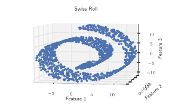
As we’ve seen, unsupervised methods rely on data structure to “tell a story” – therefore, if your linear method is applied to a nonlinear dataset, and you just get a big blob, how do you know what’s wrong?
You need a large number of samples before you can conclude that your dataset is nonlinear (and for nonlinear methods to work at all).
The swiss roll is nonlinear in 3 dimensions, but if your data is nonlinear in a million dimensions, it’ll be tough to know ahead of time.
Therefore, validation of these methods will require some amount of labeling or ground truth.
If you have a lot of data, you can assume it lies on a well-defined manifold – that is, the points form a “sheet” in high-dimensional space.
The only distances that are valid are those between a point and its close neighbors; everything else is invalid (i.e. the distance is “infinite”).
Think of houses on switchback streets: if you’re in a car, and not driving over people’s lawns, you have to travel the road to get to your neighbor’s house.
There are a lot of these methods, but they all make some pretty basic assumptions:
There are a lot of nonlinear methods.
We will cover the last two, as they are what most people gravitate towards these days, and it’s implemented in MATLAB.
This is a relatively new method developed in 2008 by:
It is a nonlinear, probabilistic technique which is also solved through numerical optimization (i.e., gradient descent).
This means that running t-SNE multiple times may give you different embeddings.
Let’s assume we have our $d$-dimensional dataset, $\{\mathbf{x}_{1}, \mathbf{x}_{2}, \ldots, \mathbf{x}_{N}\}$.
We assume that $d$ is fairly large, and that all features are relevant to describing the dataset.
The goal is to find a mapping where similarity between points is preserved, which in t-SNE is done by modeling between-point similarity as a probability distribution (and a Gaussian, no less).
If we assume the points are distributed as a Gaussian in high-dimensional space, then the probability, $p_{j|i}$, is understood as the likelihood that point $\mathbf{x}_{i}$ would have $\mathbf{x}_{j}$ as its “neighbor” (in other words, that the points would be close together).
$ p_{j|i} = \frac{\exp\left[-|\mathbf{x}_{i} - \mathbf{x}_{j}|^{2}/ 2\sigma^{2}_{i}\right]}{\sum_{k\neq i}\exp\left[-|\mathbf{x}_{i} - \mathbf{x}_{k}|^{2} / 2\sigma^{2}_{i}\right]} $
If you look closely, this is just a Gaussian where one of the points serves as the “mean”. The value of $\sigma$ is a parameter that can be derived from the “complexity” of the data, and is a tunable parameter.
By normalizing by the number of all points, we get a measure of point similarity:
$ p_{ij} = \frac{p_{i|j} + p_{j|i}}{2N} $
Next, we define a similar point-wise probability for the points in low dimensional space as well. Here, high-dimensional point $\mathbf{x}_{i}$ is referred to in low-dimensional space as $\mathbf{y}_{i}$.
Low-dimensional probability is defined as:
$ q_{ij} = \frac{\left(1 + |\mathbf{y}_{i} - \mathbf{y}_{j}|^{2}\right)^{-1} }{\sum_{k\neq i}\left(1 + |\mathbf{y}_{i} - \mathbf{y}_{k}|^{2}\right)^{-1}} $
This is NOT a Gaussian modeling: this is a Student-t distribution (hence, “t-distributed SNE”).
The paper goes into detail for each of their choices, but the use of two different distributions addresses some issues where outlier points have incorrect amounts of influence on the resulting mapping.
The Student-t distribution works like an inverse square law for large distances, meaning that the scale of the mapping doesn’t affect the result.
So we have a probability distribution on the data in high dimensions, $p_{ij}$, which we can calculate. We also have a form for the low-dimensional distribution, $q_{ij}$, but we can’t calculate that because we don’t know what $\mathbf{y}$ should be.
To find the location of the points $\mathbf{y}$, we minimize the Kullback-Leibler Divergence, which is defined as:
$ KL(P||Q) = \sum_{i\neq j}p_{ij}\log{\frac{p_{ij}}{q_{ij}}} $
The KL Divergence is basically how you calculate the difference between two probability distributions.
How do we minimize? Gradient descent!
As with any numerical optimization approach, we have to think about:
Because of this, t-SNE can give you different results if run multiple times (because of local minima), and selection of parameter values is critically important.
So interpreting your results should be done with a fair amount of caution. Make sure you test robustness by running the algorithm multiple times with different parameter sets on data you know is clean.
In addition, t-SNE has its own tunable parameters:
Again: you need to check that what you’re getting makes sense for your own data and assumptions.
Interpreting dimensionality reduction methods should be done with extreme caution.
Unsupervised methods, clustering, and DR are obviously a HUGE topic.
They are typically the first thing you can do when you start collecting data.
Cheap, (somewhat) fast, and give you an idea of how well your calculated features are doing.
There are a ton of variations of what we’ve discussed, but if you are interested, this is a good starting point.
Neural networks are an extension of linear machines and will serve as the basis for deep learning.
Next class, we will begin building the foundations we’ll need for understanding these complex classifiers.